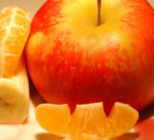

Phytochemicals & Nutrition Laboratory · UAQ
Research & Development
on Food, Nutrition
& Health
Dr. Elhadi M. Yahia leads pioneering research on phytochemicals in fruits and vegetables — their identification, bioavailability, biological functions, and nutritional importance. Over 30 years shaping global food science.
30+
Years of Research
40+
Collaborators
500+
Publications


